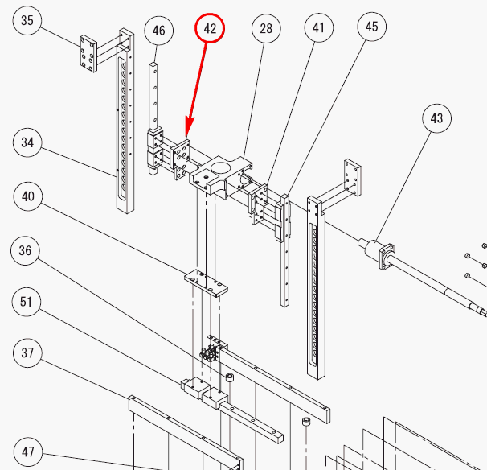

Service History
Subject: NS7KW-06 Index Arm 2 found slant
Handler Model: NS-7080W(Xilinx, S/N:121040)
Controller: RC520
Date: 10 Jun 2008
Symptom
Index Arm 2 found slant due to Socket Layout Kit (SLK) did not latched properly during conversion.
Action
Index Arm 1 condition same as index Arm 2 where the linear guide Connection Plate bent. Horizontal plane slant towards negative Y direction.
Tried add shims onto index arm 1 horizontal plane but distance between Index Arm 1 and Index Arm 2 unable to correct.
Normal distance between Index Arm 1 & 2 is 40mm, now is 42mm.
Removed Connection Plate 2 and tried hammer back to shape but still NG.
Part name : Connection Plate 2
No: 7NS07-42
Description : H01-B110-017

16 Jun 2008:
Index arm alignment was carried out using Index Arm Alignment jig.
P50 and P51 were also re-teached.
Dummy run carried out ith FG676 27x27, Octal site package, everything was good.
Another verification check on P50 and P51 was carried out on 1x3 change kit and Socket layout kit, found to be good.
Cause